UBICACIÓN
Integrado en la comarca del Matarraña, se sitúa a menos de 30 km de la capital administrativa, Valderrobres.
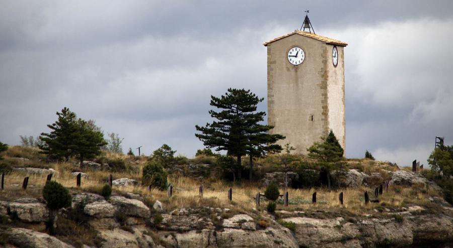LOCALIZACIÓN
El relieve del municipio es irregular, con numerosos barrancos entre lomas, muelas y montañas.
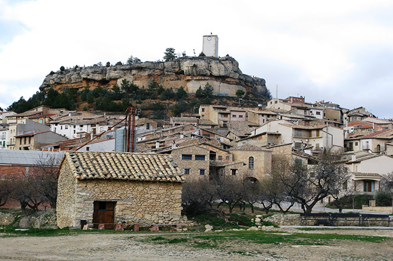DEMOGRAFIA
Tiene un área de 79,20 km², con una población de 385 habitantes, y una densidad de 4,86 hab/km².
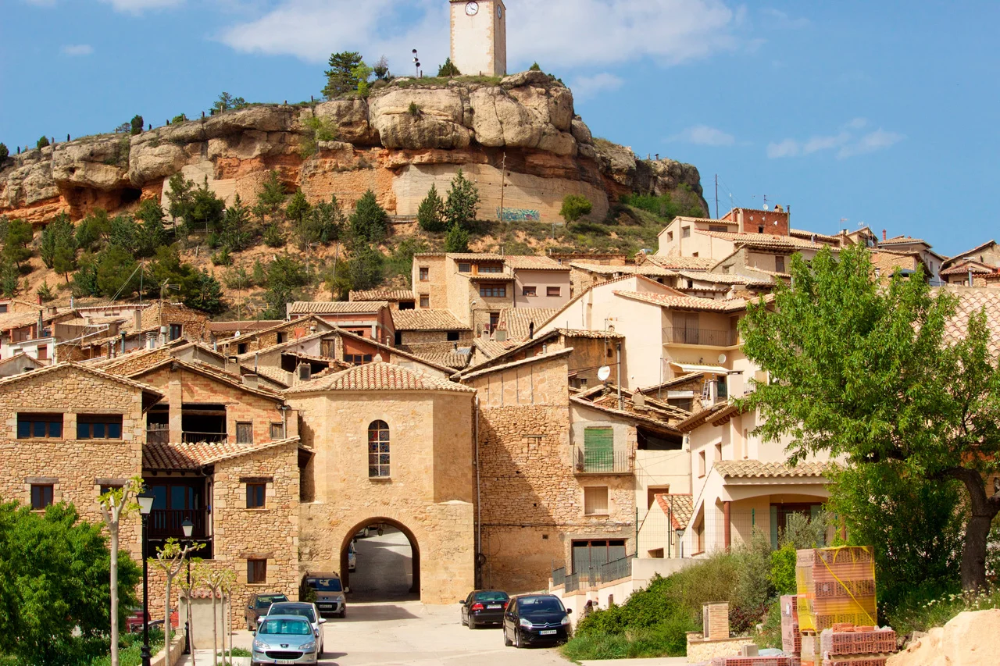HISTORIA
Uno de los momentos históricos más importantes de monroyo fue su gran masacre. La masacre de Monroyo, conocida también como la saca de Monroyo, consistió en la ejecución extrajudicial de un grupo de personas sospechosas de colaborar con la guerrilla antifranquista por parte de agentes de la Guardia Civil, el 11 de noviembre de 1947. Las víctimas fueron entre seis y ocho habitantes de varias localidades turolenses, que fueron sacados de la cárcel de Alcañiz y asesinados en un punto de carretera cercano a una explotación agrícola de Monroyo.
Consulte más información en el siguiente link.
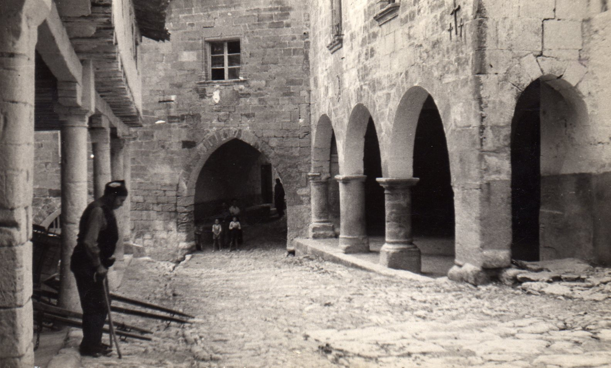LUGARES DE INTERÉS
En cuanto los mayores lugares de interés del municipio encontramos:
LA MOLA
LA IGLESIA
EL AYUNTAMIENTO
LA TORRE DEL MARQUÉS
Es el reloj del pueblo ubicado en una de las zonas del municipio. Cuenta con una antiguedad de más de 200 años y es uno de los mayores monumentos del bajo aragón.
Construïda hace más de 100 años, superviviente de los bombardeos franquistas, la iglesia de Monroyo es uno de esos lugares que no te puedes perder.
Ubicado en el centro del pueblo, destaca por sus inmediaciones y su estado a pesar de los años.
Divisado desde el mismo valle del río Tastavins. Un lugar con un marcado carácter histórico en el que tuvo lugar, en el siglo XI, la batalla de Tévar, protagonizada por Rodrigo Díaz de Vivar “El Cid”. La Torre del Marqués es uno de los más lujosos hoteles españoles.
NOTICIAS
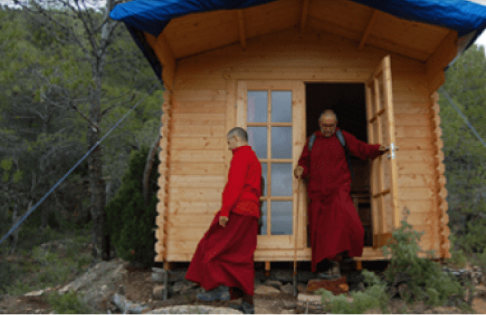Un dignatario budista en Monroyo
El gran maestro budista Gyana Vajra bendecirá mañana, jueves, el centro de meditación impulsado en Monroyo por el monje Ngawang Wangjor -también conocido como Vicente Latre- desde hace tres años. Vajra, de 42 años y que reside habitualmente en La India, será proclamado próximamente sucesos de su padre, Gongma Trichen Rinpochére, como "rey" de los maestros budistas y continuador en la enseñanza de esta religión desde su creador, Buda.
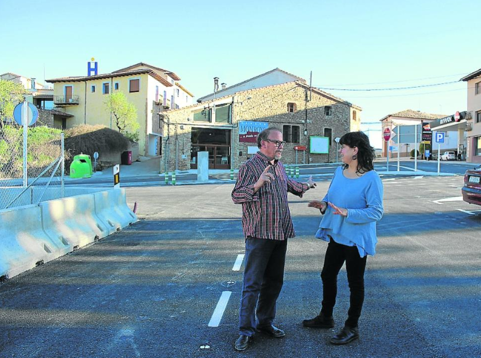La población celebra la apertura de la N-232 en Monroyo después de 25 años de obras
La carretera, estrecha y con curvas cerradas y sin visibilidad, era un cuello de botella para el desarrollo del Bajo Aragón Histórico. No hubo inauguración oficial.

Monroyo, capital nacional del corte de jamón
Por primera vez esta cita en la comarca de Matarraña será clasificatoria para la final del Campeonato de España de 2023.
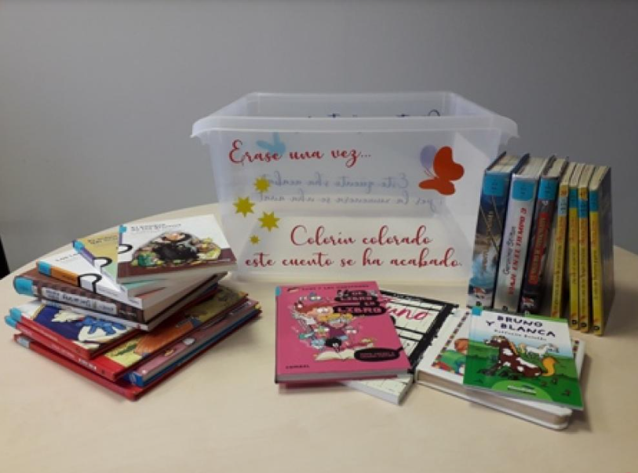La maleta viajera llevará más de 200 libros de ruta por el Matarraña
El proyecto de fomento de la lectura en bibliotecas municipales del medio rural llega a 17 localidades de la comarca desde ahora hasta noviembre de 2020.
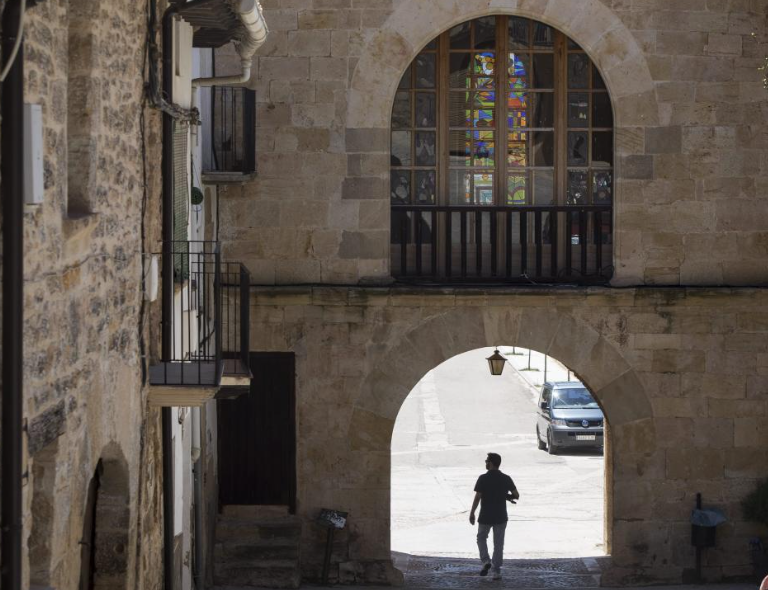Una vecina de Monroyo, herida grave tras ser arrollada por su propio coche
El freno de mano falló y la mujer fue embestida por el vehículo al intentar detenerlo.
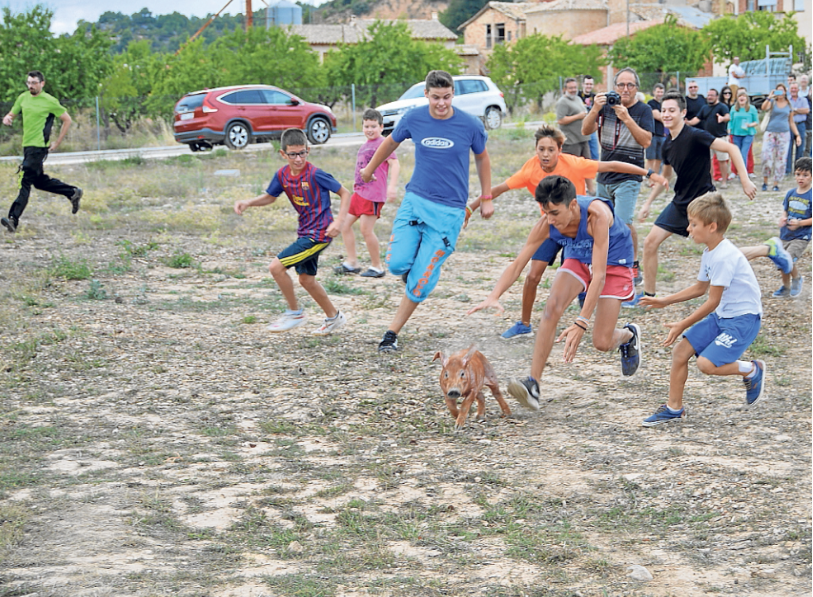Carreras con pollos como trofeo
La tradicional carrera de "pollastres" tuvo lugar el lunes en una era cercana al pabellón municipal de Monroyo
Mapa de Monroyo
Galería de imágenes
| 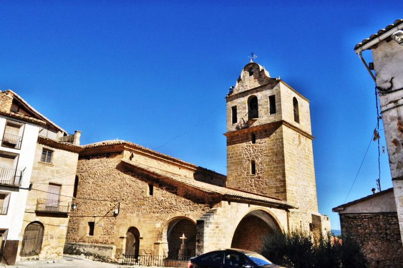 | 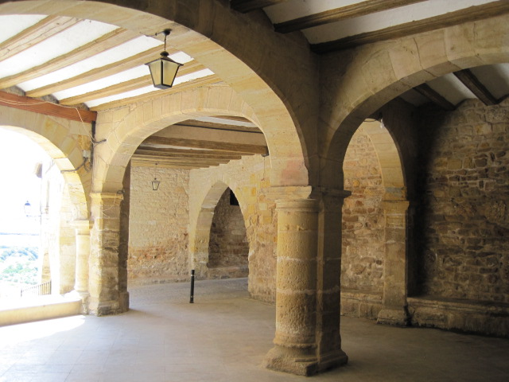 | |
|---|---|---|
| 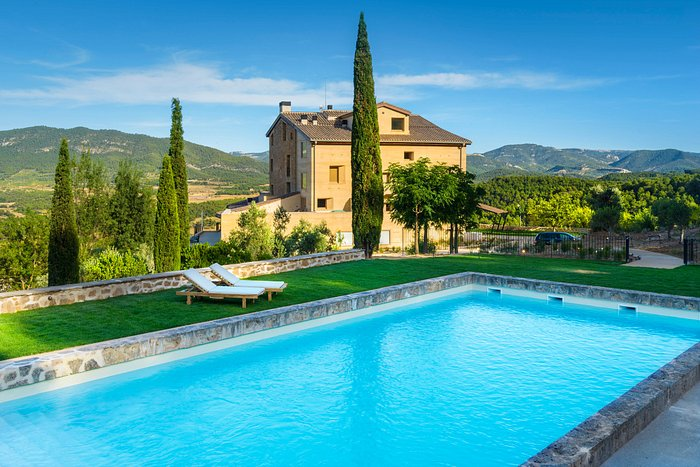 |